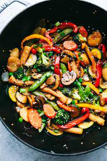

Delicious Stir Fry

Grandma's Rustic Stir Fry Recipe
My Grandmother would always make the best vegetable stir fry. She would make the vegetables by scratch over the course of a week.
This recipe follows her stir fry in the old world tradition. It uses freshly cut vegetables, and takes about a week to make.
Please enjoy this recipe.
Ingredients
- Whole wheat noodles
- Salt
- Olive oil
- Butter
- Carrots
- Celery
- Peas
- Tofu
- Peanuts
- Soy Sauce
- Sesame Oil
- Garlic
- Rice Wine Vinegar
- Bok Choy
Steps
- Start by stir frying the hardiest of vegetables.
- Once they start to soften up, add the noodles.
- Finish with a sauce made of soy sauce, rice wine vinegar, and sesame oil.